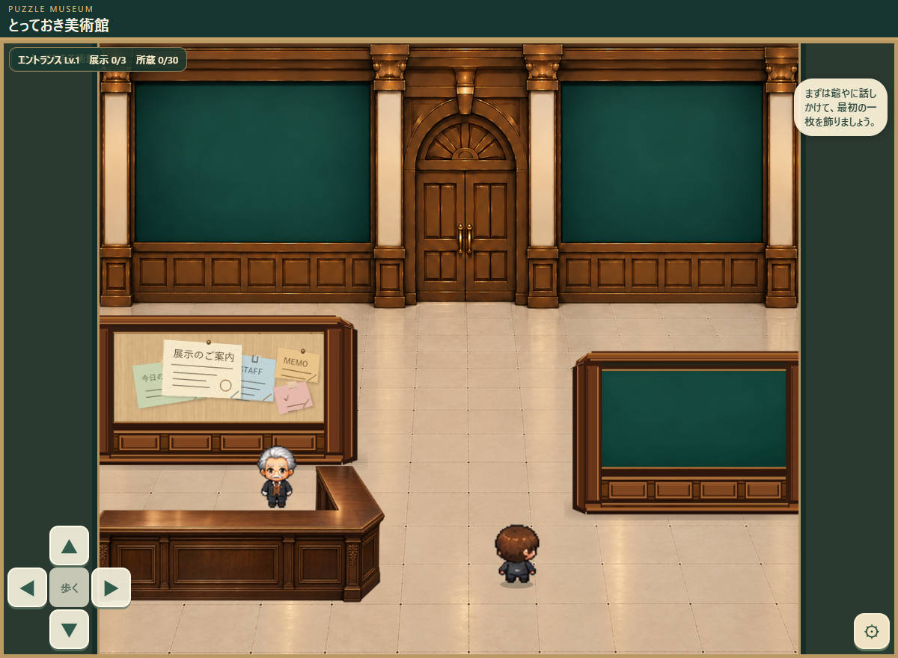
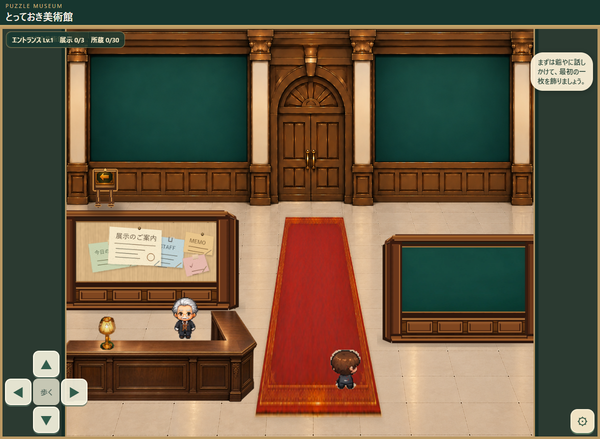
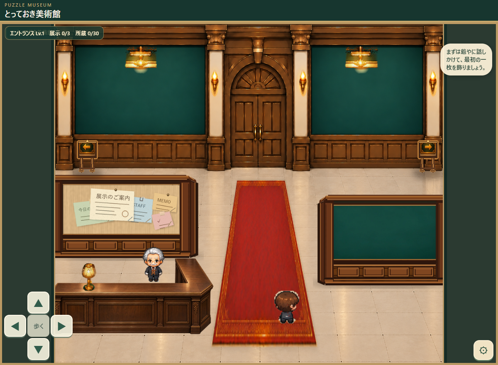
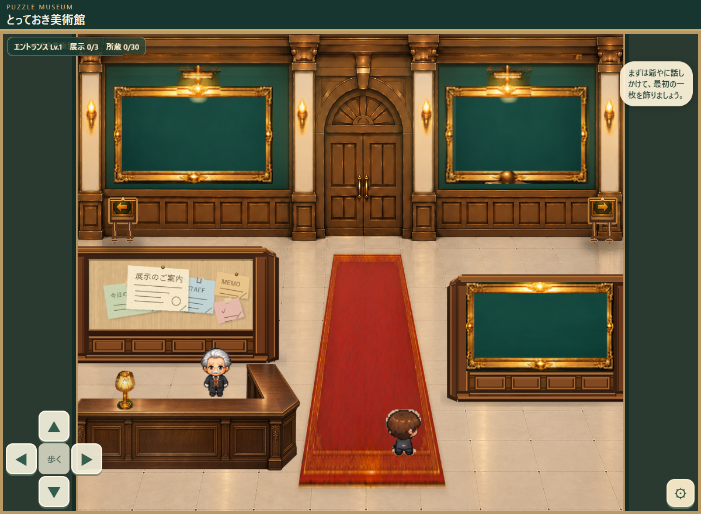
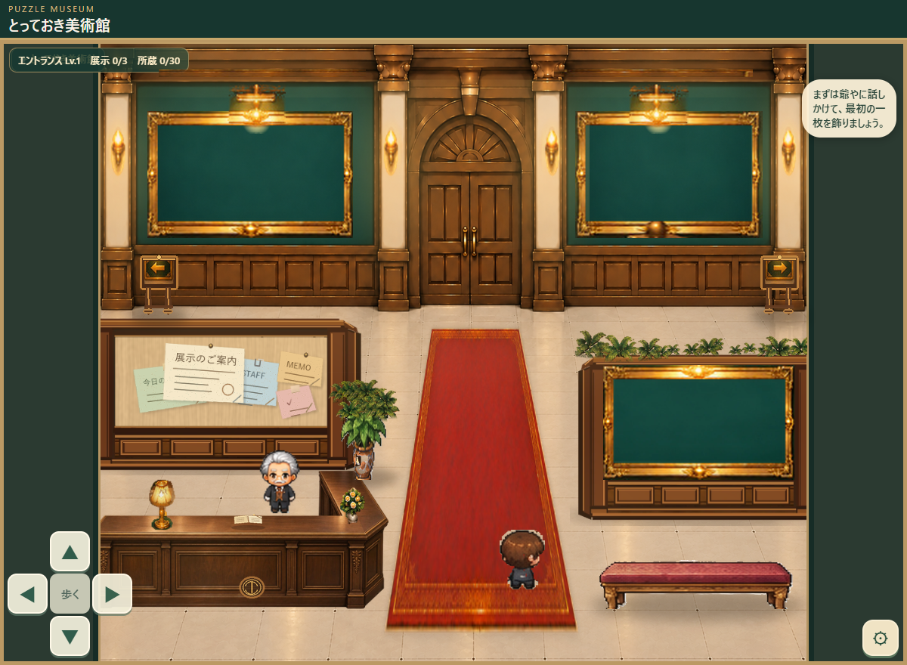

Lv.1
小さな美術館の始まり
正式デザイン・変更なし
既存ゲームのエントランスを固定基準にしています。
Lv.1とLv.6は承認済みの画像をそのまま掲載。Lv.2〜Lv.5の4枚は既存独立素材から制作した未承認の比較案です。各画像をタップすると原寸で確認できます。
Lv.2から展示室1へ、Lv.3から展示室2へ、Lv.6から中央奥の展示室5へ。装飾は段階的に累積していきます。左右の道は仕切り壁の裏です。

既存ゲームのエントランスを固定基準にしています。

増えるもの：左の立て看板／外側の柱灯2灯／受付ランプ。
左通路が開放され、最初の案内がつきます。

増えるもの：右の立て看板／中央寄りの柱灯2灯／ロング絨毯。
右通路も開放され、中央の奥行きが生まれます。

増えるもの：3か所の金装飾額縁／展示灯2灯／壁上部の金装飾。
写真部分は空のまま、額縁の装飾を比較します。

増えるもの：鑑賞ベンチ／左の背高植木／右仕切り壁裏の植栽／受付の小物。
休める場所と自然の気配が加わります。

増えるもの：右下の長い植え込み／手前の植物／天井灯／扉上の館章／床装飾／暖色の仕上げ。
承認画像を一切描き直していません。
確認上の注意：画像内の「エントランス Lv.1」等は撮影元のUIです。Lv.2〜6の実装画面を再現した表示ではありません。ここでの検証は見た目のみで、通路の当たり判定・人物の前後レイヤー・写真の縦横比追随・ゲーム内進行は別工程です。
Lv.5とLv.6では、ベンチの前方に植え込みが追加される一方、額縁とベンチの間に通行の見た目上の余白を残す方針です。静止画像で通行の成否は保証しません。